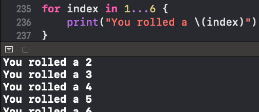
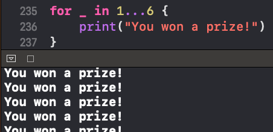
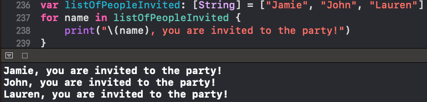
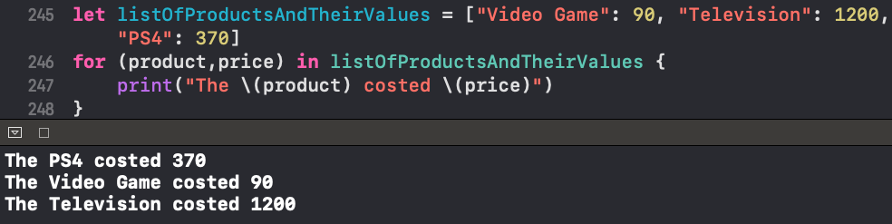
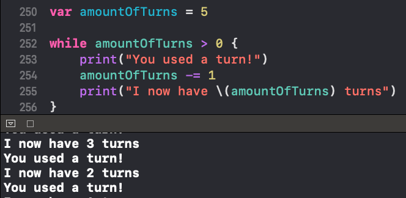
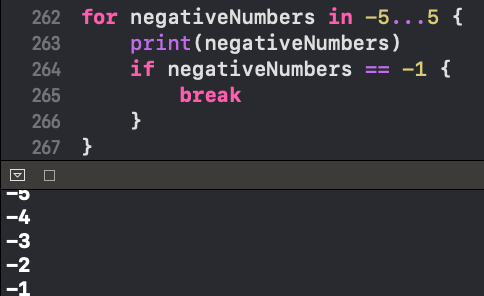

There are two types of Loops "for" and "while"
A for loop is useful for repeating something a set number of times or for performing work across a collection of values.
You can replace "index" with "_" if you don't have to use it in the body of the loop
For Loops can be used with Arrays
For Loops can be used with Dictionaries
A while loop will continue to loop until its specified condition is no longer true
There may be a situation where you want to stop execution of a loop from within the loops body. The Swift keyword "break" will break the code execution within the loop and start executing any code defined after the loop
